Loading the playbook…
Étude 1 · finished 15 November 2026 · 2:10.9 at 1080p
Capriccio for Piano
A MIDI file and a recording turned into a music video. On the right the notes fly in, flash and move as they are played. On the left a White Key, a Black Key and a Brown Piano act out the music, every pose landing on a note.
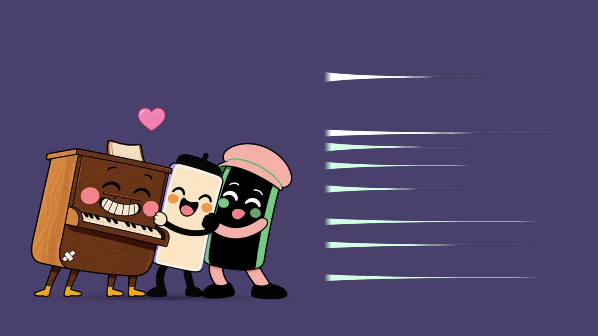
3,927frames at 30 fps
43finals built
7rounds of MIDI edits
~390drawings cut into poses
249redrawn sharp
23kits and prompts for GPT
What's here
The film
Every part with its frames, colours, note shapes and story, how one frame is built, and how it got there, final by final.
Pipeline
The whole process as one diagram, from MIDI to YouTube. Click any step for what it does, its files and its commands.
Playbook
The full method: every workflow, the lessons learned, and what to change for other music, characters, movements or backgrounds.
Tools
The commands to render, build and check, the settings that matter, and examples of the GPT redraw kits.
New video
Plan the next one: music, parts, colours, characters, moments. It writes the starting files, the ChatGPT prompts and a message to start Claude.
The film
Three parts, two crossings and a coda
Each part has its own background colour, note shape, note movement and character story. Times are video times in the final, etude1_final_43.mp4.
How one frame is made
The notes are rendered once, on black, by the MuVis renderer. Each part's script then builds every frame in four layers: the background colour, the character's soft shadow, the character, and the notes on top. The notes are moved 384 px to the right so they are struck at 60% of the width, recoloured for the part, and faded in from a vanish line at 25%, so they never reach the characters.
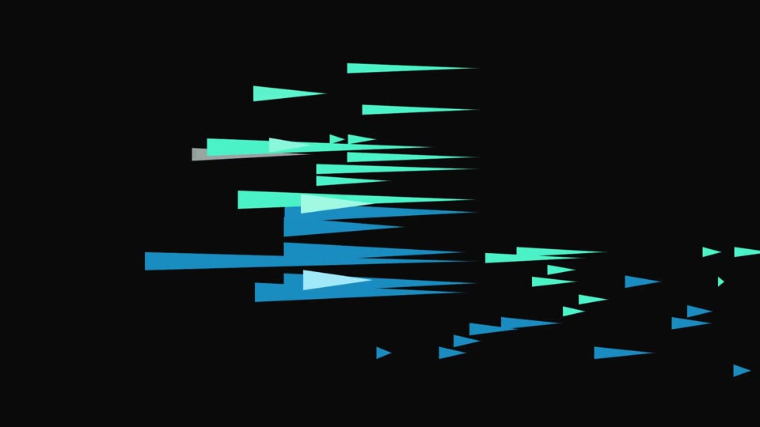
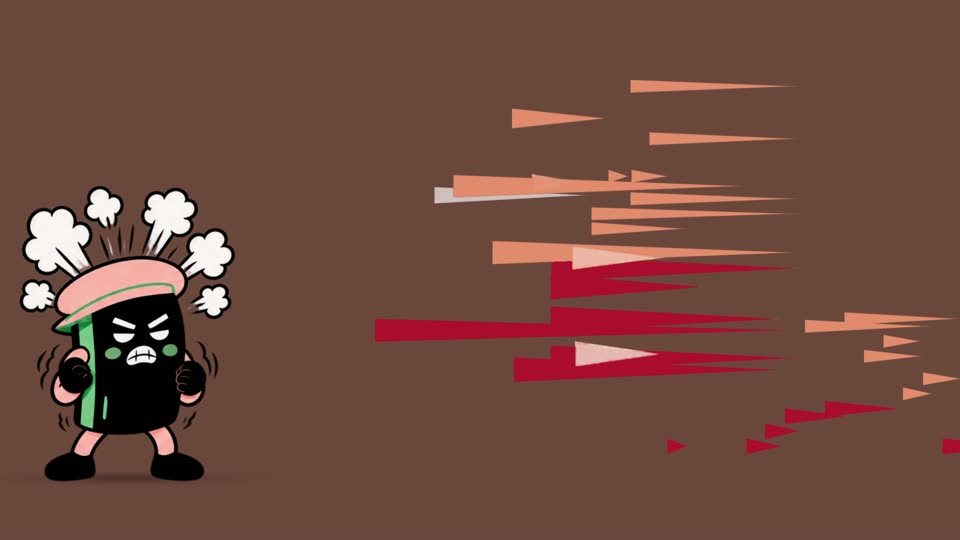
Final by final
Every final is numbered and logged in CLAUDE.md with what changed and why. The milestones:
Pipeline
From MIDI to YouTube
Two lanes meet in the middle: the music becomes a notes render, the drawings become poses, and the choreography puts the poses on the notes. Then build, check, fix, and build again. Click a step.
Tools
Commands
Paths are from tools/video-render/. Every command here was run on this project.
The settings that matter
A GPT redraw, start to finish
When a drawing is soft, smudged or wrong, GPT redraws it from a kit and Claude checks and fits the result. These are from the beret fix in final 42 and the mouth fix in final 43.
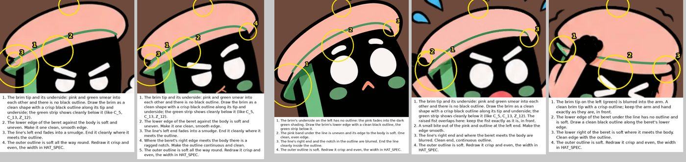
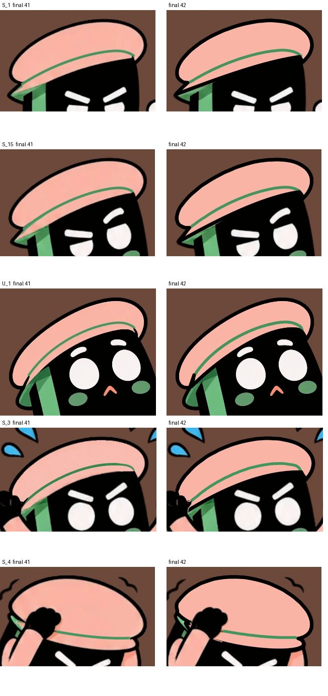
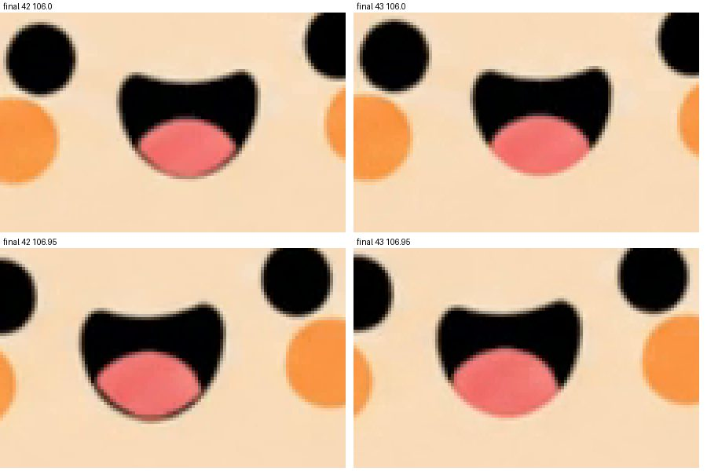
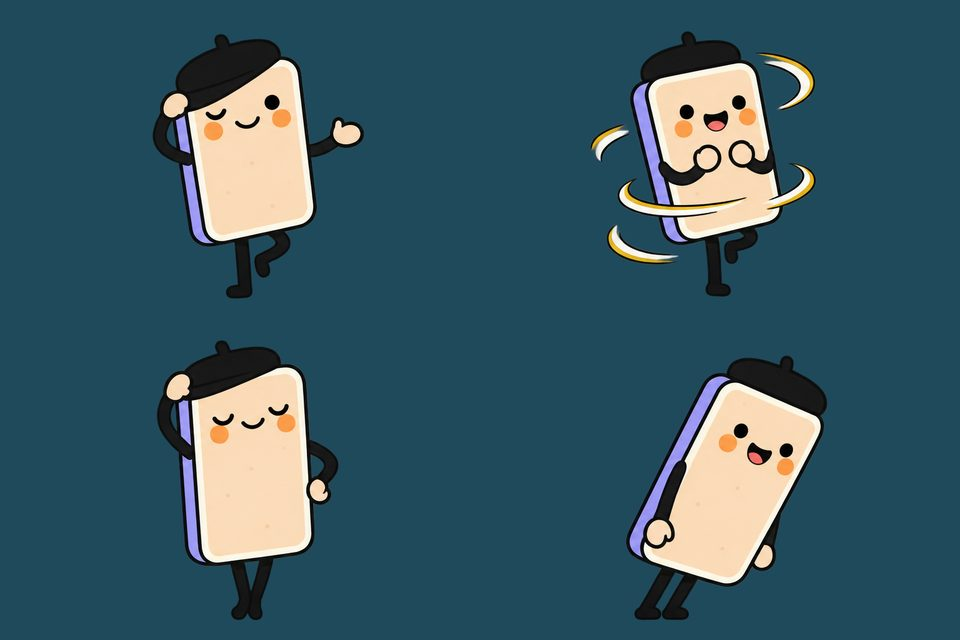
Finding moments
qa/contact_sheet.py lays out a stretch of the video. This is the piano's fall, 1:16 to 1:20.5, the moment three of the thumbnails came from.
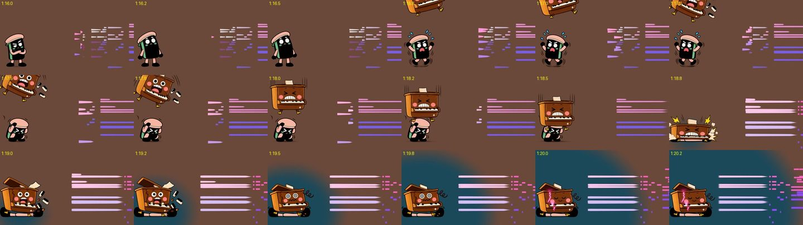
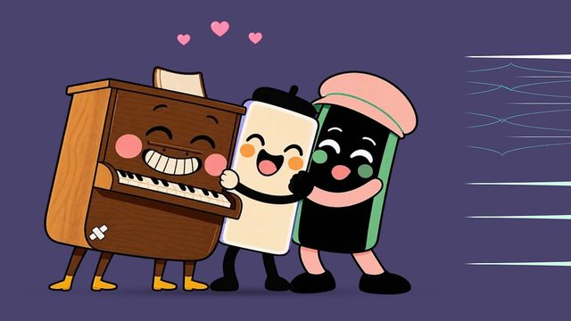
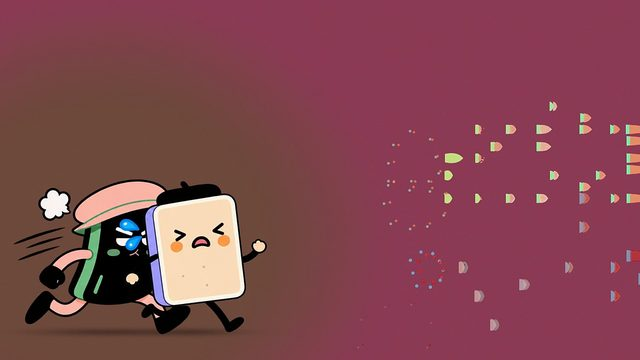
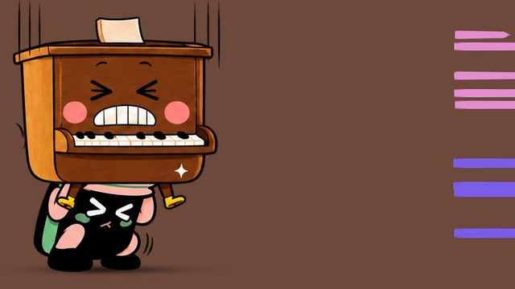
New video
Plan the next video
Fill in what you know; leave the rest. The plan is saved as you type, and below it the planner writes the starting files: the checklist, the sections file, the character bible, the ChatGPT prompts, a storyboard and a message to start Claude with.